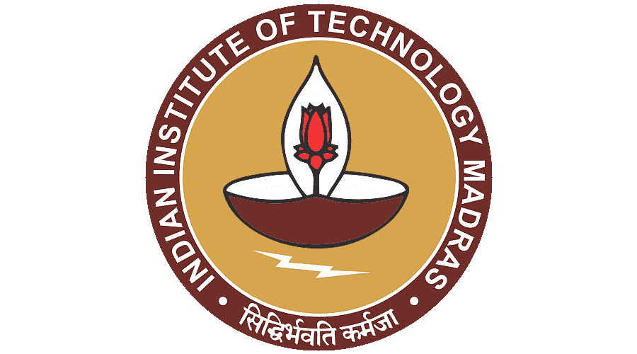
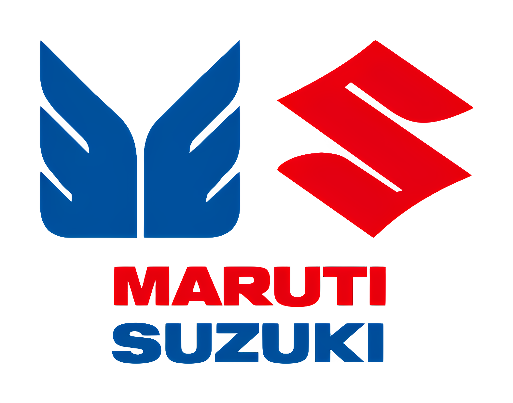

Energy systems researcher
Data centers in low-carbon energy systems.
I study how digital infrastructure can interact with urban energy networks through optimization, thermal integration, and life cycle assessment.
Affiliations and experience



